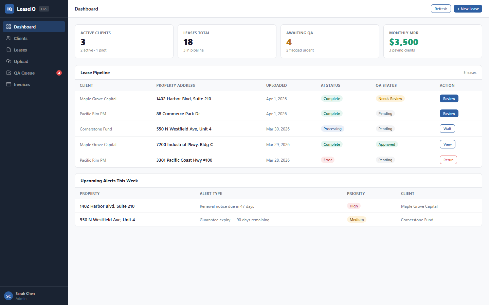
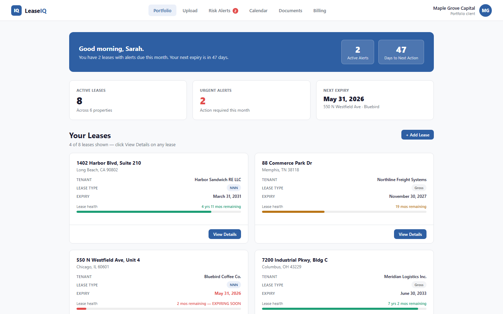

A working prototype of a lease abstraction service for commercial real estate owners. The model reads the lease, the server checks and scores the result, and a reviewer approves it.
Claude Sonnet 4 through the Anthropic SDKNode.js and Expresspdf-parse for page-marked textPlain HTML, CSS and JavaScript front ends
17lease fields extracted by the model
3further fields calculated by the server
6risk alert rules
2front ends: ops console and client portal
The problem
Abstracting a commercial lease by hand takes hours, and the dates that matter most (expiry, renewal notice windows, guarantee burn-off) are the ones that get missed. Owners need the key terms in one place, with a way to check each one against the document.
How it works
Lease PDF uploaded
→
Text split by page
→
Claude extracts 17 fields
→
Server derives 3 more and runs risk rules
→
Reviewer approves
→
Client portal
Structured output, every time. The model is forced to answer through a single tool call with a fixed schema, so the response always contains all 17 fields in the same shape.
Every field is checkable. Each value comes back with a confidence score from 0 to 100, the page it was found on and a quoted citation from the lease.
Arithmetic stays out of the model. Remaining term, annual rent and rent per square foot are calculated by the server from the extracted values.
Risk rules are explicit. Six rules raise alerts with a High, Medium or Low severity: expiry inside 6 months, expiry inside 2 years, renewal notice deadline, no renewal options, no personal guarantee, and a guarantee that ends before the lease does.
A person approves the result. The ops console has a QA queue. Low-confidence fields must be resolved before a lease can be approved and released to the client.

Operations console: pipeline, QA queue and upcoming alerts. All names and figures are fictional demo data.

Client portal: portfolio view with lease health and expiry tracking. Fictional demo data.
The demos on this site run on built-in sample data. Live extraction needs the server and an API key, so the upload step is not active here.